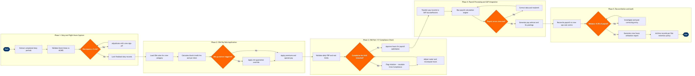

| Step | L4 Step Name | KPI / Target | Pain Point / Risk | Gate |
|---|---|---|---|---|
| 1.1 | Extract completed duty periods from crew system | Data extraction completeness ≥99.9% of operated flights | Late ACARS sign-off events or manual overrides in Jeppesen can produce duplicate or null duty records, requiring manual reconciliation before payroll can proceed | |
| 1.2 | Validate actual block times against ACARS data | Block-time discrepancy rate <0.5% of legs per pay cycle | ACARS message loss over oceanic tracks or VHF dropouts can leave gaps requiring manual entry from paper OFP, introducing audit risk | |
| 1.3 | Adjudicate duty time discrepancies with crew | Discrepancy resolution cycle time ≤24 hours | Pilots and cabin crew may contest block-time adjustments that reduce pay — disputes require union observer involvement under most CBAs, extending resolution time | ⚠ |
| 1.4 | Lock finalised duty records for pay period | Records locked ≥48 hours before payroll cut-off | Late crew changes from irregular ops (IROPS) in the final days of a pay period can force record reopening, risking payroll deadline breach | |
| 2.1 | Load CBA pay rules for crew category | CBA rule table accuracy rate 100% (zero miscategorisation) | Airlines operating multiple crew agreements (pilots vs cabin crew vs contract ground) must maintain separate rate tables in SAP SuccessFactors; version mismatches after CBA renegotiation cause systematic overpayment or underpayment | |
| 2.2 | Calculate block/credit hours and per diem | Payroll calculation variance vs manual audit sample ≤0.1% | CBAs often specify credit hours that differ from actual block hours (e.g. scheduled vs actual, or minimum leg credit), requiring complex conditional logic that is error-prone when rates change mid-year | |
| 2.3 | Evaluate and apply minimum-guarantee provisions | Minimum guarantee errors detected in post-payroll audit ≤0.2% | IROPS-driven trip removals can drop crew below the monthly minimum guarantee, triggering a top-up that must be calculated separately from regular flight pay — SAP wage-type configuration must handle this without double-counting | ⚠ |
| 2.4 | Apply premiums, overrides, and special pay components | Premium application accuracy ≥99.8% validated against CBA schedule | Introduction of new aircraft types (e.g. A320neo vs B737 MAX) or new international routes creates CBA premium ambiguity until Letter of Agreement (LOA) is ratified — interim pay must be tracked and retroactively corrected | |
| 3.1 | Validate daily flight duty period against FAR Part 117 | FAR Part 117 violation rate 0 per pay cycle; automated check coverage 100% | FAR Part 117 FDP limits vary by time-of-day start and number of flight segments — Jeppesen rules engine requires precise configuration and must be updated whenever ICAO or FAA revises rest requirements | |
| 3.2 | Check cumulative hours against 28-day and 365-day limits | Zero crew members exceeding FAR Part 117 cumulative limits (100 hrs/28 days; 1,000 hrs/365 days) | Cross-border operations and wet-lease arrangements complicate cumulative tracking when hours are flown under different AOCs — hours from partner carriers may not be visible in Jeppesen without manual import | ⚠ |
| 3.3 | Escalate violations and trigger roster correction | Violation-to-resolution cycle time ≤4 hours | Grounding crew mid-period to cure a FAR Part 117 breach triggers crew-shortage cascades and CBA compensation obligations (deadhead pay, hotel, reassignment premiums) that add unplanned payroll cost | |
| 3.4 | Approve validated hours for payroll submission | Payroll approval completed ≥36 hours before payroll cut-off | Approval bottleneck when a single manager owns sign-off for hundreds of crew — absence or IROPS event during cut-off window can delay entire payroll run | |
| 4.1 | Transfer approved pay data to SAP SuccessFactors | File transfer success rate 100%; record reconciliation count match before payroll run | Schema mismatches between Jeppesen export format and SAP wage-type structure require a custom integration layer — changes to either system can silently break the interface until the next payroll run | |
| 4.2 | Execute payroll calculation run in SAP | Payroll error log: zero critical errors; warning resolution ≤2 hours | Multi-state tax residency for crew who live in a different state from their crew base requires correct SAP tax-area assignment — errors create IRS compliance exposure and retroactive correction cost | ⚠ |
| 4.3 | Generate pay advices and post GL entries | Pay advice delivery within 24 hours of payroll run; GL posting error rate 0% | Crew cost-centre allocation requires splitting payroll costs across multiple operational cost centres when a crew member flew for different fleets or bases in the same period — misallocation distorts fleet P&L reporting | |
| 5.1 | Reconcile payroll cost vs crew operations budget | Payroll-to-budget variance explained ≥95% within 3 business days of payroll run | IROPS months generate significant unbudgeted premium and minimum-guarantee costs that distort variance analysis — Finance needs a dedicated IROPS payroll variance code to separate structural from operational pay drivers | ⚠ |
| 5.2 | Generate crew hours utilisation and fatigue report | Crew utilisation rate ≥85% of contractual hours; fatigue indicator trend published ≤5 days post-period | Combining hours data from Jeppesen with cost data from SAP requires a data pipeline that must be maintained across system upgrades — ad hoc Tableau reports built on inconsistent extracts produce conflicting crew productivity figures for leadership | |
| 5.3 | Archive payroll and hours records per FAA requirements | Record archive completeness 100%; retrieval SLA ≤4 hours for FAA audit request | FAR 121.683 mandates 24-month retention for crew duty records; GDPR and state privacy laws (CCPA) impose conflicting obligations on how long certain payroll data can be held — retention policy must be reviewed with legal each year |